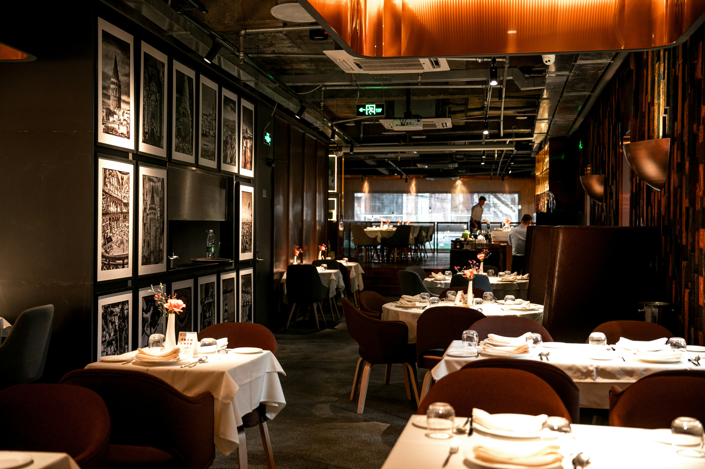

Rólunk
A Gourmet Étterem 2018 óta ötvözi a hagyományos magyar ízeket a nemzetközi gasztronómia legjavával. Belvárosi hangulatunkban minden fogás egy kis utazás, ahol a minőség és az ízharmónia kéz a kézben jár.
- Friss, helyi alapanyagok
- Kreatív, szezonális menü
- Barátságos, profi kiszolgálás

Kovács Gábor
Séfünk, Kovács Gábor, több mint 15 év szakmai tapasztalattal rendelkezik. Szenvedélye a helyi alapanyagok kreatív feldolgozása és az ízharmónia tökéletesítése.
Székely Anna
Sous-chef, specialista a desszertek terén.
Molnár Péter
Vezető felszolgáló, az élmény garantálója.
Nagy Eszter
Étteremvezető, a vendégelégedettség záloga.